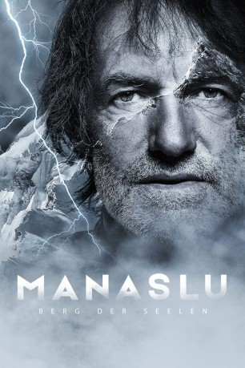
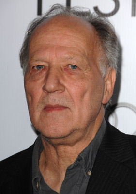

#11295 Manaslu - Berg der Seelen
 
 IMDB-Wertung: 7.3 / 10
IMDB-Wertung: 7.3 / 10  Metascore: 0
Metascore: 0 
Die Idee zum Film basiert auf der Lebensgeschichte von Hans Kammerlander, seine größten Erfolge und Tragödien. Sein größter Erfolg, der ihn weltberühmt werden ließ, ist die bis heute schnellste Besteigung über die Nordroute zum Gipfel des Mount Everest in 16h 40 min im Jahr 1996, bei der ihm im Anschluss die erste Skiabfahrt vom Gipfel des höchsten Berges der Welt gelang. Seine schmerzvollste Tragödie erlitt Hans Kammerlander 1991 am Manaslu in Nepal, wo er zwei seiner besten Freunde verlor. Nach 26 Jahren stellt sich Hans Kammerlander nicht nur erneut dem Berg, sondern auch der Tragödie von 1991.
Jahr: 2018
Dauer: 122 Minuten
FSK: 12
Land: Österreich Studio: EuroVideoTonspuren:
Untertitel:
Auflösung: 1080p (1920x800) Größe: 4730 MB
Genre: Dokumentation, Sport, Biographie
Regisseur: Gerald Salmina
Drehbuch: Gerald Salmina
Soundtrack: Manfred Plessl
Darsteller:
-  Werner Herzog als
- Christian Bianco als
- Marco Boriero als
- Sarah Born als
- Verena Buratti als
- Simon Gietl als
- Hans Kammerlander als
- Michael Kuglitsch als Hans Kammerlander
- Dominik Maringer als
- Reinhold Messner als
- Robin Oberhollenzer als
- Martin Senoner als
- Leo Seppi als
- Benno Steinegger als
Datei: X:\Dokumentationen\Sport\Manaslu - Berg der Seelen (2018, FSK12, 1920x800).mkv seit 17.06.2019
Festplatte: HD Serien(SU-Z)+Dokus+Musik
 Es gibt insgesamt 34 Filme in der Gruppe 'Dokumentationen\Sport'
Es gibt insgesamt 34 Filme in der Gruppe 'Dokumentationen\Sport'